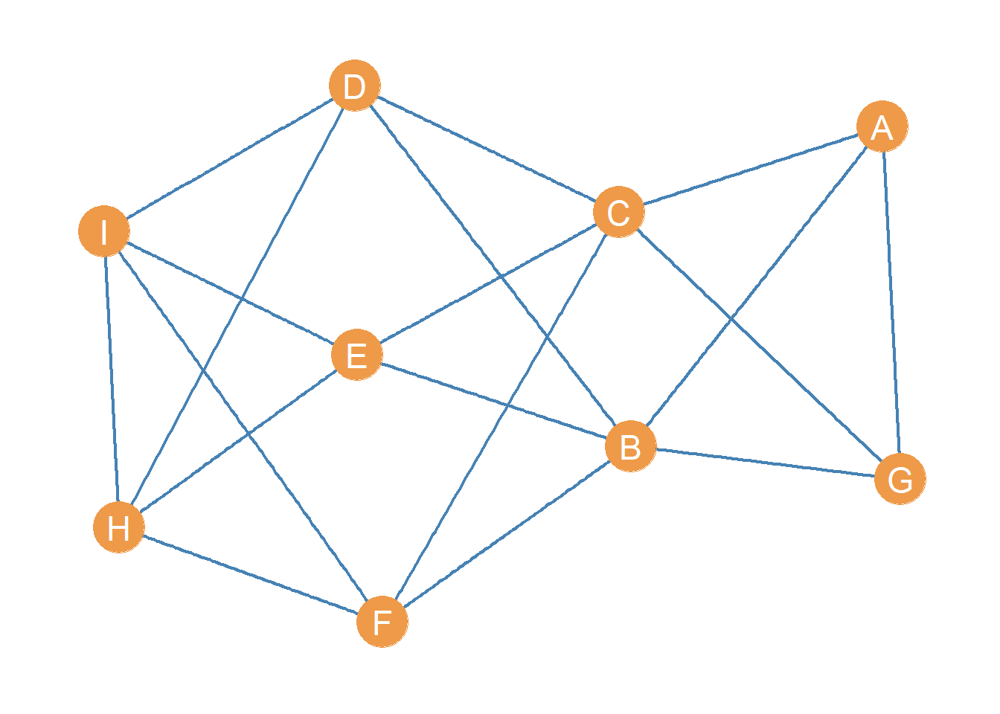

Role Equivalence and Structural Similarity
One of the earlier “proofs of concept” of the power of social network analysis came from demonstrating that you could formalize the fuzzy idea of “role” central to functionalist sociology and British social anthropology using the combined tools of graph theoretical and matrix representations of networks (White, Boorman, and Breiger 1976).
This and other contemporaneous work (Breiger, Boorman, and Arabie 1975) set off an entire sub-tradition of data analysis of networks focused on the idea that one could partition the set of vertices in a graph into meaningful classes based on some mathematical (e.g., graph theoretic) criterion.
These classes would in turn would be isomorphic with the concept of role as social position and the classes thereby derived as indicating the number of such positions in the social structure under investigation as well as which actors belonged to which positions.
Structural Equivalence
The earliest work pursued simultaneously by analysts at Harvard (White, Boorman, and Breiger 1976) and Chicago (Burt 1976) relied on the idea of structural equivalence.
In a graph \(G = \{E, V\}\) two nodes \(v_i, v_j\) are structurally equivalent if they are connected to the same others in the network; that is, if \(N(v_i)\) is the set of nodes adjacent to node \(v_i\) and \(N(v_j)\) is the set of nodes adjacent to node \(v_j\), then:
\[ v_i \equiv v_j \iff N(v_i) = N(v_j) \]
In a graph, an equivalence class \(C\) is just a set of nodes that are structurally equivalent, such that if \(v_i \in C_i\) and \(v_j \in C_i\) then \(v_i \equiv v_j\) for all pairs \((v_i, v_j) \in C_i\).
The partitioning of the vertex set into a set of equivalence classes \(\{C_1, C_2 \ldots C_k\}\) as well as the adjacency relations between nodes in the same class and nodes in different classes defines the role structure of the network.
Let us illustrate these concepts. Consider the following toy graph:
With associated adjacency matrix:
| A | B | C | D | E | F | G | H | I | |
|---|---|---|---|---|---|---|---|---|---|
| A | 0 | 1 | 1 | 0 | 0 | 0 | 1 | 0 | 0 |
| B | 1 | 0 | 0 | 1 | 1 | 1 | 1 | 0 | 0 |
| C | 1 | 0 | 0 | 1 | 1 | 1 | 1 | 0 | 0 |
| D | 0 | 1 | 1 | 0 | 0 | 0 | 0 | 1 | 1 |
| E | 0 | 1 | 1 | 0 | 0 | 0 | 0 | 1 | 1 |
| F | 0 | 1 | 1 | 0 | 0 | 0 | 0 | 1 | 1 |
| G | 1 | 1 | 1 | 0 | 0 | 0 | 0 | 0 | 0 |
| H | 0 | 0 | 0 | 1 | 1 | 1 | 0 | 0 | 1 |
| I | 0 | 0 | 0 | 1 | 1 | 1 | 0 | 1 | 0 |
A simple function to check for structural equivalence in the graph, relying on the native R function setequal would be:
check.equiv <- function(x) {
n <- vcount(x)
v <- V(x)$name
E <- matrix(0, n, n)
for (i in v) {
for (j in v) {
if (i != j & E[which(v == j), which(v == i)] != 1) {
N.i <- neighbors(x, i)
N.j <- neighbors(x, j)
if (are_adjacent(x, i, j) == TRUE) {
N.i <- c(names(N.i), i)
N.j <- c(names(N.j), j)
} #end sub-if
if (setequal(N.i, N.j) == TRUE) {
E[which(v == i), which(v == j)] <- 1
E[which(v == j), which(v == i)] <- 1
} #end sub-if
} #end main if
} #end j loop
} #end i loop
rownames(E) <- v
colnames(E) <- v
return(E)
}This function creates an empty “equivalence” matrix \(\mathbf{E}\) in line 4, loops through each pair of nodes in the graph in lines 5-20. The main condition restricts the checking to nodes that are not the same or have not yet to be found to be equivalent (line 7). Lines 8-9 extract the node neighborhoods using the igraph function neighbors.
Lines 10-13 check to see if the pair of nodes that are being checked for equivalence are themselves adjacent. If they are indeed adjacent (the conditional in line 10 is TRUE) then we need to use the so-called closed neighborhood of \(v_i\) and \(v_j\), written \(N[v_i], N[v_j]\), to do the equivalence check, or otherwise we get the wrong answer.1
The equivalence check is done in line 14 using the native R function setequal. This function takes two inputs (e.g., two vectors) and will return a value of TRUE if the elements in the first vector are the same as the elements in the second vector. In that case we update the matrix \(\mathbf{E}\) accordingly.
After writing our function, we can then type:
And the resulting equivalence matrix \(\mathbf{E}\) corresponding to the graph in Figure 1 is:
| A | B | C | D | E | F | G | H | I | |
|---|---|---|---|---|---|---|---|---|---|
| A | 0 | 0 | 0 | 0 | 0 | 0 | 1 | 0 | 0 |
| B | 0 | 0 | 1 | 0 | 0 | 0 | 0 | 0 | 0 |
| C | 0 | 1 | 0 | 0 | 0 | 0 | 0 | 0 | 0 |
| D | 0 | 0 | 0 | 0 | 1 | 1 | 0 | 0 | 0 |
| E | 0 | 0 | 0 | 1 | 0 | 1 | 0 | 0 | 0 |
| F | 0 | 0 | 0 | 1 | 1 | 0 | 0 | 0 | 0 |
| G | 1 | 0 | 0 | 0 | 0 | 0 | 0 | 0 | 0 |
| H | 0 | 0 | 0 | 0 | 0 | 0 | 0 | 0 | 1 |
| I | 0 | 0 | 0 | 0 | 0 | 0 | 0 | 1 | 0 |
In this matrix, there is a 1 in the corresponding cell if the row node is structurally equivalent to the column node.
One thing we can do with this matrix is re-order the rows and columns, so that rows(columns) corresponding to nodes that are “adjacent” in the equivalence relation appear next to one another in the matrix.
To do that we can use the corrMatOrder function from the corrplot package, designed to work with correlation matrices, but works with any matrix of values:
#install.packages("corrplot")
library(corrplot)
SE.ord <- corrMatOrder(Equiv, order = "hclust", hclust.method = "ward.D2")
SE.ord[1] 6 4 5 8 9 1 7 2 3The corrplot function corrMatorder takes a matrix as input and returns a vector of reordered values of the rows(columns) as output. We use a hierarchical clustering algorithm using Ward’s method to do the job.
We can see that the new re-ordered vector has the previous row(column) 6 in fist position, 4 at second, five at third, 8 at fourth, and so forth.;
We can then re-order rows and columns of the old equivalence matrix using this new ordering by typing:
The resulting re-ordered matrix looks like:
| F | D | E | H | I | A | G | B | C | |
|---|---|---|---|---|---|---|---|---|---|
| F | 0 | 1 | 1 | 0 | 0 | 0 | 0 | 0 | 0 |
| D | 1 | 0 | 1 | 0 | 0 | 0 | 0 | 0 | 0 |
| E | 1 | 1 | 0 | 0 | 0 | 0 | 0 | 0 | 0 |
| H | 0 | 0 | 0 | 0 | 1 | 0 | 0 | 0 | 0 |
| I | 0 | 0 | 0 | 1 | 0 | 0 | 0 | 0 | 0 |
| A | 0 | 0 | 0 | 0 | 0 | 0 | 1 | 0 | 0 |
| G | 0 | 0 | 0 | 0 | 0 | 1 | 0 | 0 | 0 |
| B | 0 | 0 | 0 | 0 | 0 | 0 | 0 | 0 | 1 |
| C | 0 | 0 | 0 | 0 | 0 | 0 | 0 | 1 | 0 |
Once the equivalence matrix is re-ordered we can see that sets of structurally equivalent nodes in Figure 1, appear clustered along the diagonals. This type of re-arranged matrix is said to be in block-diagonal form (e.g., non-zero entries clustered along the diagonals).
Even more interestingly, we can do the same re-arranging on the original adjacency matrix, to reveal:
| F | D | E | H | I | A | G | B | C | |
|---|---|---|---|---|---|---|---|---|---|
| F | 0 | 0 | 0 | 1 | 1 | 0 | 0 | 1 | 1 |
| D | 0 | 0 | 0 | 1 | 1 | 0 | 0 | 1 | 1 |
| E | 0 | 0 | 0 | 1 | 1 | 0 | 0 | 1 | 1 |
| H | 1 | 1 | 1 | 0 | 1 | 0 | 0 | 0 | 0 |
| I | 1 | 1 | 1 | 1 | 0 | 0 | 0 | 0 | 0 |
| A | 0 | 0 | 0 | 0 | 0 | 0 | 1 | 1 | 1 |
| G | 0 | 0 | 0 | 0 | 0 | 1 | 0 | 1 | 1 |
| B | 1 | 1 | 1 | 0 | 0 | 1 | 1 | 0 | 0 |
| C | 1 | 1 | 1 | 0 | 0 | 1 | 1 | 0 | 0 |
This is called a blocked adjacency matrix. As you can see, once the structural equivalence relations in the network are revealed by permuting the rows and columns, the adjacency matrix shows an orderly pattern.
The way to interpret the blocked adjacency matrix is as follows:
The block diagonals of the matrix reveal the intra-block relations between sets of structurally equivalent nodes. If the block diagonal is empty–called a zero block–it means that set of structurally equivalent nodes does not connect with one another directly. If it has ones–called a one block–it it means that members of that set of structurally equivalent nodes are also neighbors.
The off diagonal blocks reveals the inter-block adjacency relations between different clusters of structurally equivalent nodes. If an off-diagonal block is a one-block, it means that members of block \(C_i\) send ties to members of block \(C_j\). If and off diagonal block is a zero-block, it means that members of block \(C_i\) avoid associating with members of block \(C_j\).
So if:
\[ C_1 = \{D, E, F\} \]
\[ C_2 = \{H, I\} \]
\[ C_3 = \{A, G\} \]
\[ C_4 = \{B, C\} \]
Then we can see that:
Members of \(C_1\) connect with members of \(C_2\) and \(C_4\) but not among themselves.
Members of \(C_2\) connect among themselves and with \(C_1\).
Members of \(C_3\) connect among themselves and with \(C_4\).
Members of \(C_4\) connect with \(C_1\) and \(C_3\) but avoid associating with their own block.
These intra and inter-block relations can then be represented in the reduced image matrix:
| C_1 | C_2 | C_3 | C_4 | |
|---|---|---|---|---|
| C_1 | 0 | 1 | 0 | 1 |
| C_2 | 1 | 1 | 0 | 0 |
| C_3 | 0 | 0 | 1 | 1 |
| C_4 | 0 | 0 | 1 | 0 |
Which reveals a more economical representation of the system based on structural equivalence.
References
Breiger, Ronald L, Scott A Boorman, and Phipps Arabie. 1975. “An Algorithm for Clustering Relational Data with Applications to Social Network Analysis and Comparison with Multidimensional Scaling.” Journal of Mathematical Psychology 12 (3): 328–83.
Burt, Ronald S. 1976. “Positions in Networks.” Social Forces 55 (1): 93–122.
White, Harrison C, Scott A Boorman, and Ronald L Breiger. 1976. “Social Structure from Multiple Networks. I. Blockmodels of Roles and Positions.” American Journal of Sociology 81 (4): 730–80.
Footnotes
The closed neighborhood of a node is that which includes nodes adjacent to it and the node itself.↩︎